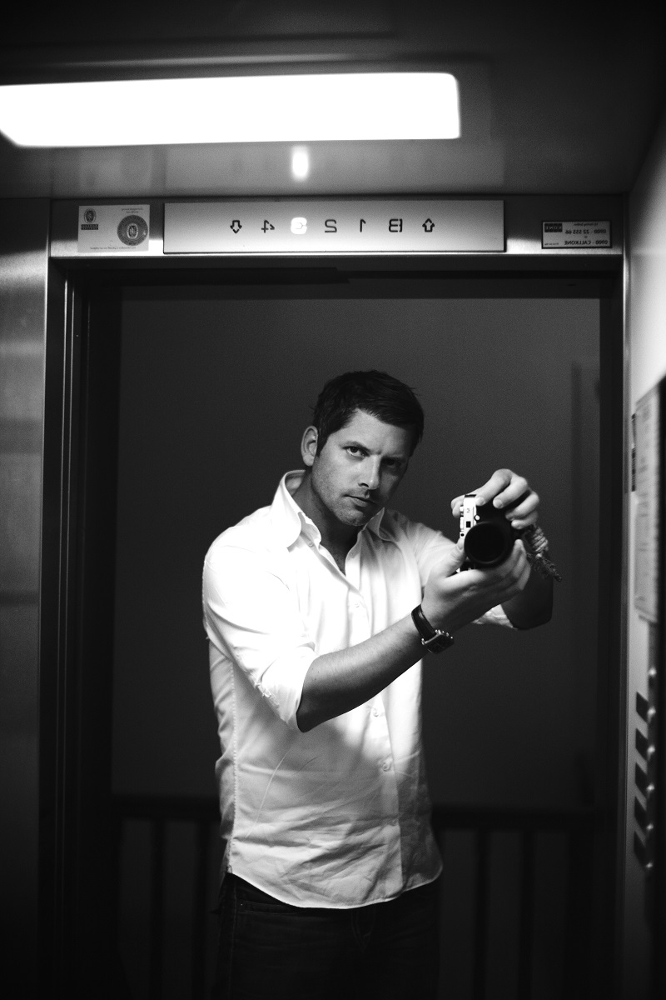
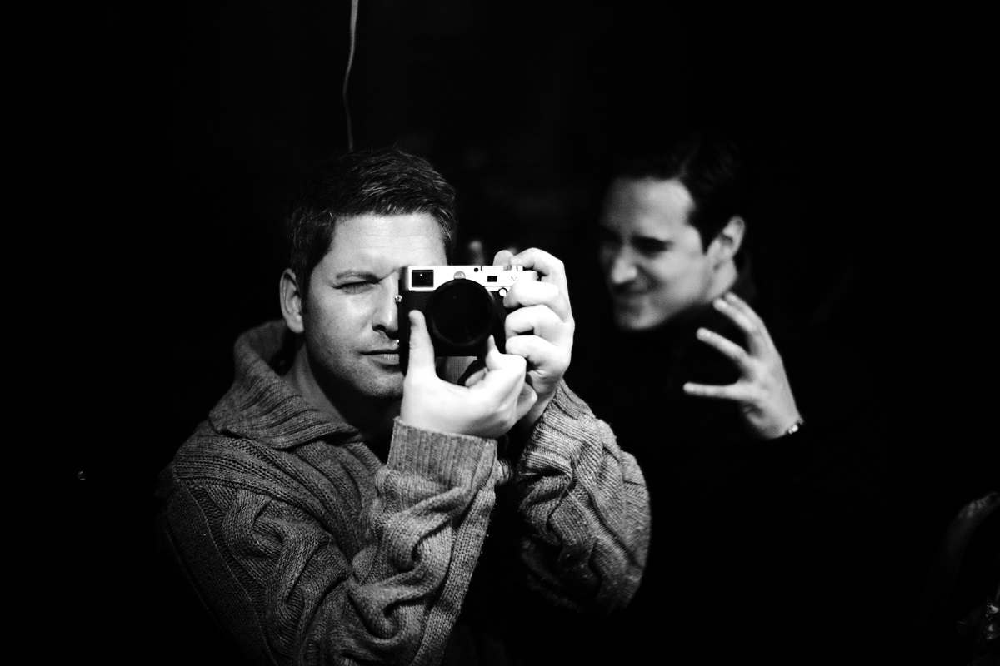

Alexander Lux
Seit Jahren ist Alexander Lux eine feste Größe künstlerischer Fotographie. Der hohe Anspruch an seine Arbeit zeigt sich in der Vielfältigkeit seiner Motive, der angewandten Techniken und der außergewöhnlichen Umsetzung.
Die Bandbreite des Schaffens umfasst die Darstellung vermeintlicher Alltäglichkeiten, bis hin zur großen Produktion.

Dabei lässt sich Alexander Lux auf seine Motive ein und gibt ihnen seine charakteristische Handschrift.
Seine Arbeit überzeugte und inspirierte unter anderem Mothers Finest, Peter Maffay Band, das Panikorchester & Udo Lindenberg und viele weitere.